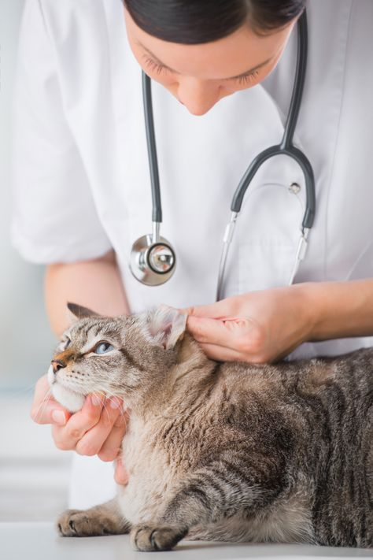

Where Your Pet's Health is Our Top Priority.
We provide top-quality care for your furry family members. Trust us with your pet and experience the difference of having a veterinary clinic that truly cares.
Clinnipets is a veterinary clinic, offering routine check-ups, surgery emergency care, and advanced diagnostics using state-of-the-art technology.
At Clinnipets, we understand that pets are family. As pet owners and animal lovers, we provide top-quality care for your furry family members. Trust us with your pet and experience the difference of having a veterinary clinic that truly cares.
I grow up on a ranch where I went horseback riding from a young age and developed a deep familiarity with animals. My entire family has been involved in the pet clinic industry. My father, uncle, and grandfather all owned their own businesses and I have many happy memories in their veterinary clinics.
I pursued this passion by studying veterinary for years in my home country, and I am now eager to bring my expertise and love for animals to Ottawa.

We understand that every pet is unique and we are committed to providing individualized attention to ensure the best possible outcomes.

We have invested in the latest technology and equipment to ensure that we can provide the highest quality veterinary care to our patients.

Our team of veterinary professionals is highly trained and experienced, with a deep passion for animal health and well-being.
I'm so glad I found this clinic. They were able to diagnose and treat my pet's health issue quickly and effectively.
I'm so glad I found this clinic. They were able to diagnose and treat my pet's health issue quickly and effectively.
555-555-5555
616 Raindrop St, Riverside, Ottawa, Ontario
MON-SUN: 10: 00 am - 10: 00 pm